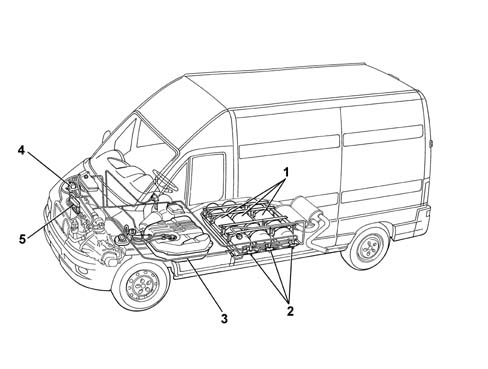

GENERAL REMARKS ON CNG CANISTER AND REPRESSURIZING PIPES
- Path
- Descriptions > 10 ENGINE > 1042 CNG (METHANE) GAS CANISTER AND PIPES > 1042A CNG CANISTER AND PRESSURIZING PIPES > GENERAL REMARKS ON CNG CANISTER AND REPRESSURIZING PIPES
- Kind
- system description
- Applies to
- engines: 2.0 16V; all production periods; only with equipment: Methane
- Interactive page
- https://sloeber94.github.io/elrnDB-fDct/en/#/244000382
Applies to: engines: 2.0 16V; all production periods; only with equipment: Methane

- 1, Methane canisters
- 2,- Solenoid valves on canisters
- 3, Methane pipes
- 4, Methane pressure reduction unit
- 5, Methane manifold with injectors